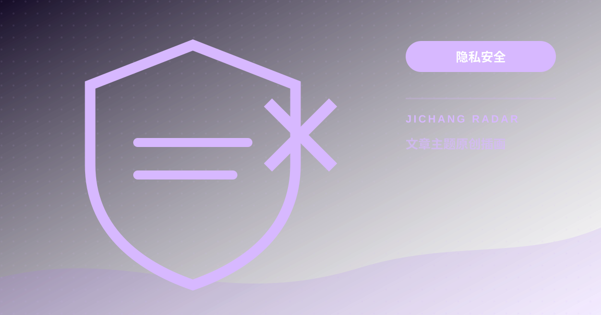
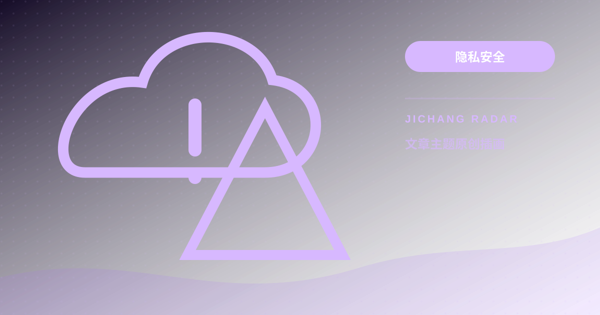

隐私安全2026-09-24 · 11 分钟阅读订阅链接为什么不能公开？泄露后的正确处理方式订阅链接往往等同于访问凭证。把完整链接发到群聊、截图或在线转换站，都可能导致流量被盗用。继续阅读 →
隐私安全2026-09-23 · 12 分钟阅读免费 VPN 与免费机场能不能用？成本与隐私账怎么算免费不是原罪，但网络服务必然有成本。若你不知道谁在付服务器和带宽费用，就要多问一句为什么。继续阅读 →